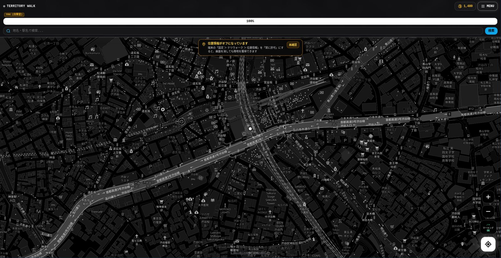

01
歩いた道が、残る
GPSで歩行を記録し、通った場所がタイルになって自分の色に変わる。通勤の道も、散歩の寄り道も、ぜんぶ盤面に残ります。
ウォーキング・ゲーム / iOS・Web
歩いた場所が、陣地になる。
白と黒だけの地図の上で、歩いた道が自分の陣地に変わる。 歩けば歩くほど盤面は広がり、同じ街を歩く誰かと陣地を奪い合う。 位置情報からつくった、ひとりで歩くためのゲームです。
インストール不要・無料 ／ iOS版は TestFlight でテスト配信中

01
GPSで歩行を記録し、通った場所がタイルになって自分の色に変わる。通勤の道も、散歩の寄り道も、ぜんぶ盤面に残ります。
02
同じ街を歩くプレイヤーと陣地を取り合います。電波が届かない場所でも歩行は記録され、つながったときにまとめて反映されます。
03
開拓や奪還でコインがたまり、地図の色や称号と交換できます。ただし勝敗を決めるのは歩いた距離だけ。お金で強くなる仕組みは入れていません。
油絵と、絵の具についての本をつくっています。
2026.12.11 – 12.27
大阪・中崎町のギャラリー「アトリエ三月」の年末展に出品します。12月8日に搬入、会期は12月11日から27日まで。
制作中
手持ちの絵具を自分で塗って完成させる手描きカラーチャートと、好きな作家さんのインタビューをまとめた一冊。
販売
原画やZINEを置いているお店です。描いたものと、つくったものが並びます。
しょうだい（shodai4）。大阪でエンジニアをしながら、Webアプリと絵をつくっています。 TERRITORY WALK は、歩くことが好きなのに地図アプリの記録が続かない、という自分の困りごとから始めました。
サーバー代のかからない構成で、自分の手の届く範囲のものを、長く動かし続ける作り方を選んでいます。